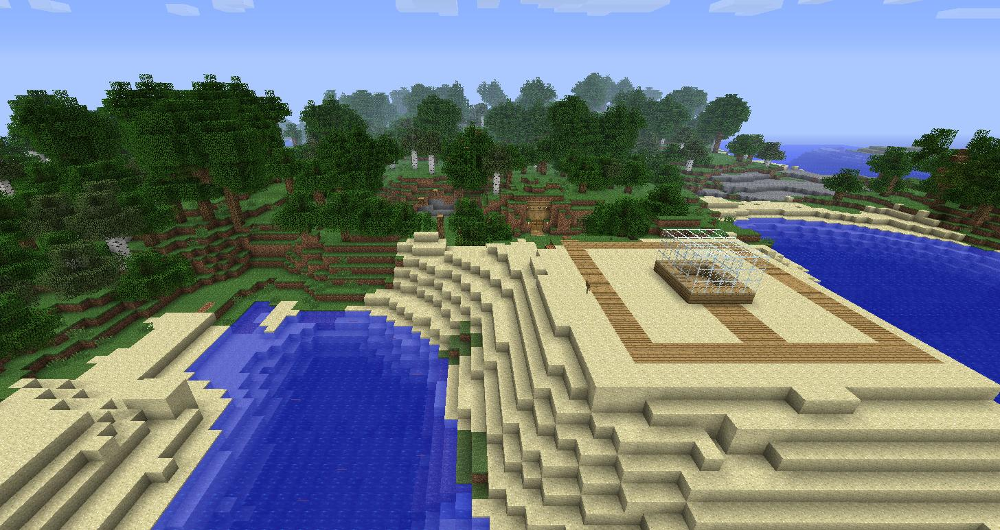
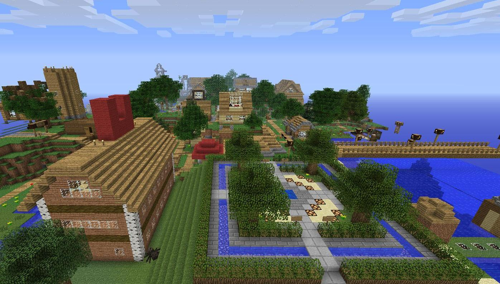
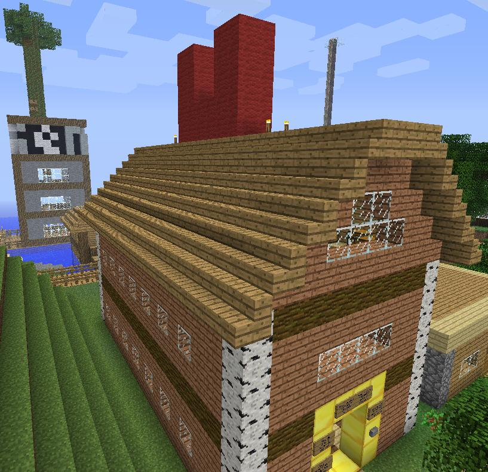

Introduction
Enfin ! Le site dont tout le monde a entendu parlez est ouvert et j’en suis très fier et pour cela je vais vous endormir en vous racontant les tous débuts du serveur.

Eh oui ! C’est bien le Spawn que vous voyez la mais bien avant votre arriver car le serveur lui a ouvert le 25 avril 2012 mais sous Hamachi et malheureusement hormis Tetdoss, Draxxo (moi) et de temps à autre Superman il n’y avait personne…. Dur à croire ? Pas tant que sa, car malgré que nous soyons ouvert et accueillant eh bien Hamachi repousser tout le monde, Tetdoss a donc décider d’héberger sur son PC le serveur pour ne plus avoir besoin d’Hamachi et lorsqu'une annonce a été faite sur JeuxVideo.com le 30 mai 2012 tout le monde à commencer à affluer sur le serveur et grâce à vous maintenant le Spawn ressemble à sa :

Nouvelle génération de vendeur ou d’arnaqueur ?

Grâce à l’arriver massivement des joueurs de JeuxVideo.com le serveur ces vue encombrer d’une grande partie de véritable Kévin que moi-même(Draxxo) et quelques joueurs avons décidé d’escroquer en ouvrant des Shops et comme vous pouvez le voir beaucoup de Shop sont ouvert à présent et vous aller devoir faire votre choix pour savoir ou faire vos achats.
U les nouveaux commerçant
Pour bien mettre en évidence l’ouverture de ce site j’ai tout simplement fait une chose pour beaucoup de joueurs du serveur. Comme vous le savez surement mon Shop a connu des heures difficiles car étant le plus grand Shop disponible, tout le serveur venait faire ses achats chez moi et cela était vraiment épuisant de le remplir tout les jours. Mais vu qu’aucun de mes anciens concurrents ne faisait vraiment pas le poids et ne peuvent gérer toute cette population, j’ai donc décidé de rouvrir le Shop pour vous, même si je dois y laisser ma vie, le Shop sera le plus souvent réapprovisionner. Pour ne pas vous tromper voici le Shop qui va bientôt redevenir le plus grand et plus acclamé de tous :